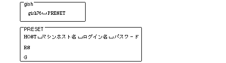

Return to previous page | Return to menu | Go to next page
The HITACHI E7000 ICE is controlled by software with a dedicated graphical user interface (GUI). This software is called "debugger" in this manual. The following describes how to start up and initialize this debugger.
1) Turn on the power of the ICE first and then the target (in the reverse order when turning off the power).
2) Creating a file for automation
Create two files “gish” and “PRESET” in the current directory.

3) Start the debugger
Enter "gish" on the host machine and return to start the debugger.
If the following message appears in the middle of startup and waits for input, click in the window to validate key input and return.
When the target is reset and the initial screen is displayed, click “STOP”.
4) Load initial program
Type “g 400” and click “STOP” when the screen disappears.
5) Development settings (disable interrupts)
From the [VIEW] menu, select “REGISTER” to display the “Register Dialog Box”.
Enter “000000f0” in the status register (SR) and click “ENTER”.
Caution
This development setting is for using ICE. It is not necessary to set in the software to be actually released.